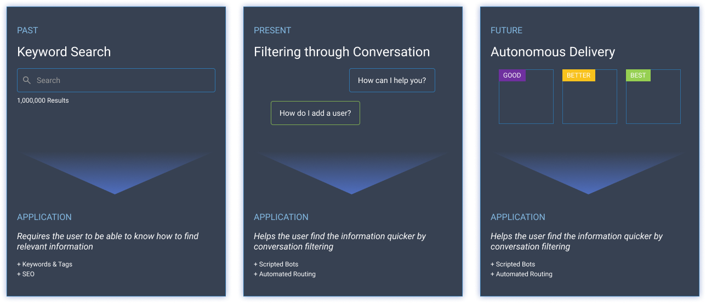
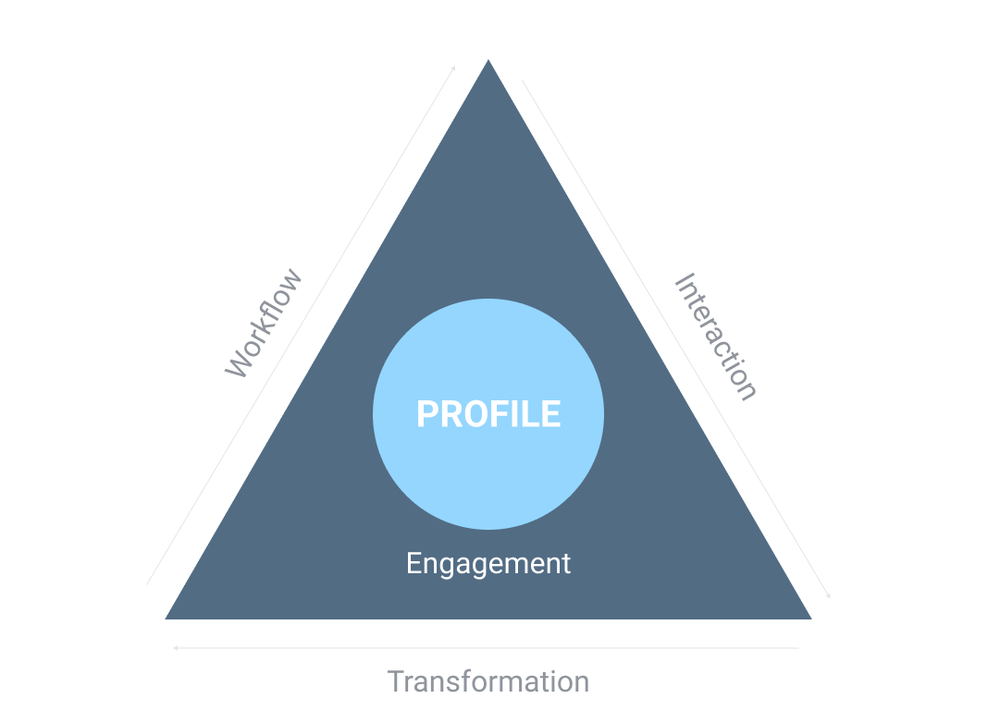
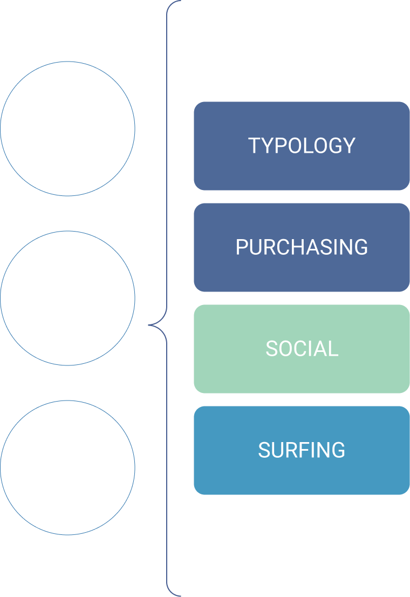

Introduction
We worked as a team of two designers and one lead strategist, and our objective was to explore and push the limits of what Artificial Intelligence could do when used to its full potential. The piece you'll read here is one of the many use cases we worked through in 2023.
When we think about the way online experiences evolved so far and what we can expect with the insurgence of Artificial Intelligence, there is a visible line dividing how people search for information. We can break these into three key moments:
Keyword Search
Requires the user to be able to know how to find relevant information.

The pace of technological advancements is rapidly increasing, offering incredibly innovative solutions that can achieve tasks that once required a large team - take for example LLMs, video generation, personalized recommendation, no-code application, etc.
To build the future of connection, we need to redefine how browser navigation works, bringing other systems closer to it.
Experience → Collection → Training, along Interaction, Transformation and Workflow. Each completed lap adds a ring of data to the profile.
Illustrative: one ring per lap shows the idea, not measured data.

Data is key – now, every interaction is a transaction.

- All data, our own and our competitors, equate to an understanding of our customers’ needs.
- The more data we have about our customers, the greater the opportunity.
- Every data source has great value, but combined, it becomes exponential.
- Every bit of data helps us know our customers intimately.
The greater the data density, the greater ability to continuously engage.